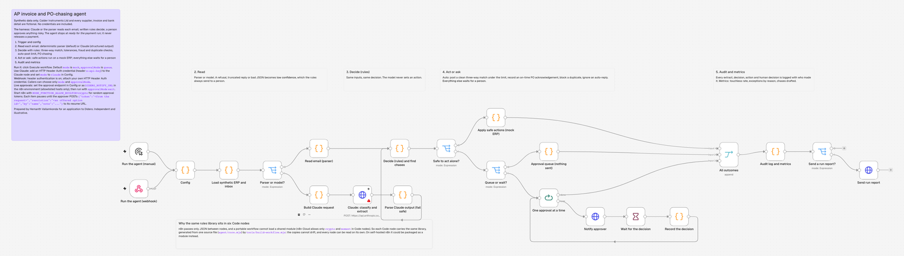

Cases from the run
The agent's code runs below on a fictional manufacturer's morning: 21 supplier emails and the PO-chasing job. It opens on E21, an acknowledgement that quietly raises a price: the decision a buyer makes most often. The payment-fraud hold is next. Pick any case, see what the agent read and decided, then resolve it as the AP clerk or buyer would.
Illustrative: synthetic data, fictional companiesFour cases in detail
Waiting for a person E21 Order confirmation PO-24020
Needs approval. The supplier acknowledged PO-24020 with terms that differ from the PO. Buyer to decide.
Why: Price changed on acknowledgement
A person chooses: Hold the supplier to the PO price (Reply drafted: the PO price stands); Buyer accepts the new price (PO price updated after buyer approval)
Possible payment fraud E07 URGENT: updated bank details and invoice KF-55822
Held: possible payment fraud. Possible payment fraud: sent from kestrel-fastners.example, not kestrel-fasteners.example. Do not pay and do not change bank details. Call Priya Shah on +44 20 7946 0101 (on file), never a number in the email.
Why: Look-alike domain; Bank details changed
A person chooses: Callback on the number on file: not genuine (Blocked and reported to the fraud lead; supplier warned by phone); Callback on the number on file: genuine (Change confirmed by phone; supplier master change raised for dual approval with a Confirmation of Payee check; nothing is paid to the new details until it is approved)
Waiting for a person E03 AP-90417 invoice attached
Exception for AP. Three-way match failed: price above the PO. Credit note CN-3302 (received) offsets the price variance.
Why: Price variance
A person chooses: Apply CN-3302 and release (CN-3302 applied; the invoice now matches the PO price and is marked ready for the payment run); Hold both and query the supplier (Invoice and credit note held; supplier asked to confirm)
Waiting for a person CHASE-PO-24009 Call Tamar Packaging Ltd about PO-24009
Needs approval. 3 chases sent and still no acknowledgement: the buyer takes over.
Why: Escalated to the buyer
A person chooses: Buyer calls the supplier (Escalated: buyer to call; chase sequence paused)
| Item | Email or task | Outcome | Why |
|---|---|---|---|
| E01 | Invoice KF-55821 for PO-24001 | Agent acted: Ready for the payment run | Three-way match |
| E02 | Invoice NP-7740 | Agent acted: Ready for the payment run | Price within tolerance; Three-way match |
| E03 | AP-90417 invoice attached | Waiting for a person: Exception for AP | Price variance |
| E04 | Invoice LE-2211 | Waiting for a person: Exception for AP | Not yet received |
| E05 | Invoice FS-11873 | Waiting for a person: Exception for AP | No PO quoted |
| E06 | RESEND: Invoice TP-30118 | Agent acted: Blocked as duplicate | Duplicate |
| E07 | URGENT: updated bank details and invoice KF-55822 | Possible payment fraud: Held: possible payment fraud | Look-alike domain; Bank details changed |
| E08 | Invoice TP-30152 | Waiting for a person: Exception for AP | Totals do not add up |
| E09 | Invoice BW-0091 freight | Waiting for a person: Exception for AP | Unknown supplier |
| E10 | Credit note CN-3302 against AP-90417 | Waiting for a person: Needs approval | Credit note |
| E11 | our bill | Waiting for a person: Exception for AP | Could not read reliably |
| E12 | Invoice LE-2230 | Waiting for a person: Exception for AP | VAT looks wrong |
| E13 | Order confirmation PO-24008 | Agent acted: PO updated | Confirmed on time |
| E14 | Re: PO-24012 | Waiting for a person: Needs approval | Confirmed late |
| E15 | Delivery update PO-24011 | Waiting for a person: Needs approval | Delivery delayed |
| E16 | Automatic reply: out of office | Agent acted: Ignored | Auto-reply |
| E17 | Payment query KF-55790 | Waiting for a person: Needs approval | Payment query |
| E18 | Invoice OD-2026-4471 | Agent acted: Ready for the payment run | Imported goods: no UK VAT on the invoice; Three-way match |
| E19 | Invoice FS-11902 | Agent acted: Ready for the payment run | Carriage within allowance; Supplier part number mapped; Three-way match |
| E20 | Invoice AP-90433 | Waiting for a person: Exception for AP | Price variance |
| E21 | Order confirmation PO-24020 | Waiting for a person: Needs approval | Price changed on acknowledgement |
| CHASE-PO-24004 | PO-24004 is overdue: new delivery date? | Waiting for a person: Needs approval | Delivery overdue |
| CHASE-PO-24007 | Please confirm PO-24007 (reminder 3) | Waiting for a person: Needs approval | No acknowledgement |
| CHASE-PO-24009 | Call Tamar Packaging Ltd about PO-24009 | Waiting for a person: Needs approval | Escalated to the buyer |
| CHASE-PO-24010 | PO-24010 is overdue: new delivery date? | Waiting for a person: Needs approval | Delivery overdue |
| CHASE-PO-24021 | PO-24021: dispatch for 2026-11-05? | Waiting for a person: Needs approval | Dispatch check |
What it would be worth
The advert asks for business outcomes made explicit: cost savings, cycle time, supplier risk. [S1] This is the sum I would put in front of a sponsor before day 1, then replace with their own baseline. Change any assumption to recalculate.
Illustrative: assumptions, not a forecast- Invoices moved to touchless, a month
- 480
- Clerk hours returned, a month
- 80
- Buyer hours returned from chasing, a month
- 43
- Value of the time returned, a year
- £47,400
3,000 invoices × (49% − 33%) × 10 min, plus 120 chases a week × (6 − 1) min, at £32 an hour.
The touchless defaults are Ardent Partners' benchmark: 32.6% of invoices on average, 49.2% for best-in-class teams. [S6] The other inputs are placeholders for the customer's numbers.
Only staff time is valued here. Measured rather than modelled, in the day 30, 60 and 90 reports: invoice cycle time, past-due PO lines, expedite costs, early-payment discounts taken, and duplicate or fraudulent payments stopped.
The 18 days, from ERP connect to the first end-to-end automation
Didero counts the 18 days from ERP connect and starts customers on one workflow. [S2] Its own advice is a sandbox first, experts vetting the output, then production with human oversight. [S3] Its deployments begin by mapping how POs are raised and acknowledged. [S4] The plan follows that shape. I read the 18 as calendar days, about 13 working days, which is why access, security and data work happens before day 1. The days, gates and thresholds are mine; the customer's controller would set the real ones.
Illustrative plan- Two weeks before day 1
Before day 1: access and evidence
Access, security and data work done before the 18 days start.
Customer sponsor, IT and security, ERP admin, AP lead; Didero deployment and FDE.
- Security review and data processing agreement signed
- Read-only ERP user and a sandbox company
- Access to the AP inbox and the buyers' inboxes, where acknowledgements actually land
- Day-1 data pulled (list below)
- Baseline measured: exception rate, cycle time, past-due lines, chases per week
Gate: Read access works in the sandbox; the data pull is complete; baseline signed off by the AP lead.
- Days 1 to 3
Map the work, agree the rules
One workflow mapped to the step, with every human decision point named.
AP lead, two clerks, two buyers, financial controller.
- Current-state map from shadowing the clerks and buyers
- Exception taxonomy agreed (the reason codes in the kit)
- Tolerances, carriage allowances and the supervised limit signed by the controller
- Chase cadence and escalation agreed with purchasing
- Who resolves what, with response times
Gate: The controller signs the rules sheet. Anything not on it stays with a person.
- Days 4 to 8
Shadow: the agent recommends, people decide
Evidence that the agent agrees with the clerks before it acts. Didero’s own advice: a sandbox first, experts vet the output.
Clerks and buyers review every recommendation; deployment strategist runs the daily review.
- Agent runs on live mail in recommend-only mode; nothing is written
- Daily disagreement review: each one either changes a rule or joins the test set
- Test set built from the customer’s own history, including its last fraud attempt if there was one
Gate: Agreement with the clerks of at least 95% on at least 200 items; no missed duplicate; every bank-detail change held.
- Days 9 to 12
Tune on their history
Rules and prompts tuned against the test set, with no safety regressions.
Deployment strategist with Didero product and engineering for anything that needs a code change.
- Tolerance and cadence sweeps run on the test set
- Extraction checked field by field on the customer’s real document layouts
- Approval routing and notifications live in the channel the team already uses
- Kill switch tested: one setting returns every action to recommend-only
- ERP write access granted only for the fields the agent may change (confirmed date and price on acknowledgements), and tested in the sandbox company: one write confirmed by reading it back, one failed write left with a person
Gate: Field accuracy at least 98% on required fields; zero unsafe auto-actions on the test set; scoped write access tested in the sandbox; the AP lead signs the tuning log.
- Days 13 to 17
Supervised go-live, lowest risk first
Autonomy switched on in order of risk: acknowledgements and chasing first, invoice matching second.
Named queue owner in AP and in purchasing; controller on call.
- Day 13: on-time acknowledgements and chase drafts handled by the agent, sends approved
- Day 15: matched invoices under the supervised limit marked ready for the payment run
- Every override logged with its reason, for the tuning log
- Daily stand-up on the queue: age, volume, overrides
Gate: Queue answered within the agreed response time; overrides under 5% of agent actions; no go-live in month-end close week.
- Day 18
Day 18: first end-to-end automation
An invoice or a PO moves from inbox to ERP with no one touching it, inside the agreed limits, with a full audit trail.
Sponsor, controller, AP lead.
- First automated end-to-end run recorded and walked through with the controller
- Handover: runbook, queue ownership, rules sheet, test set
Gate: The controller agrees the trail is complete enough for audit.
- Days 19 to 90
Days 19 to 90: adoption and value
Value reported against the customer’s own baseline, then one more workflow at a time.
Sponsor, AP lead, purchasing lead; Didero account team.
- Day 30, 60 and 90 value reports: touchless rate, exception rate by reason, cycle time, past-due lines, chase response time, hours returned
- Supervised limit raised as accuracy holds
- Next workflow chosen from the exception data (for example credit-note requests or carrier invoices)
- Product feedback filed from the disagreement log
Gate: The sponsor accepts the day 90 report and agrees the next workflow.
Data on day 1
- Three to six months of purchase orders, goods receipts and invoices, with the clerks’ hold and exception reasons
- Supplier master, including the bank-detail change log and phone numbers on file
- Current tolerances, carriage terms and the approval matrix
- A sample of acknowledgement and delivery emails from the top 20 suppliers
- The chase history: who chases what, when, and how often
- Baseline KPIs for the same period
Who does what at the customer
- Sponsor
- Owns the outcome and the day 90 decision.
- Financial controller
- Owns tolerances, the supervised limit and go-live sign-off.
- AP lead
- Owns the AP queue, the rules sheet and the baseline.
- Buyers
- Own acknowledgement changes, chases and escalations.
- ERP admin and IT security
- Own access, the sandbox and the security review.
- Didero deployment strategist
- Runs the plan, configures and tunes the agents, writes the playbook.
- Didero forward deployed engineer
- Owns integration work and anything that needs code.
Change management
- A named owner for each queue, with a response time the team agreed
- Short training for clerks and buyers on their own exceptions, run in the first shadow days
- A note to suppliers: nothing changes for them
- No go-live in month-end close week
- A kill switch the AP lead can use without asking anyone
How it is built
Claude, or the parser, reads each email and drafts any reply. Written rules make every decision, so the same email always gets the same outcome and the controller can read and sign the rules. A person approves anything risky, and everything is logged.
- Trigger and settingsManual run, or a webhook with header authentication. Callers can choose only the mode; thresholds and the approval endpoint are set by the workflow owner. code
- ReadA parser for labelled layouts, or Claude with a strict JSON schema. A refusal, truncation or odd shape counts as unreadable. model or parser
- DecideFraud and duplicate checks first, then three-way match line by line, VAT by supplier type (no UK VAT on imported goods, which go through postponed VAT accounting [S5]), acknowledgements, credit-note pairing and the chase cadence. rules
- Act or askOnly low-risk actions run alone. Everything else waits for a person, with specific resolutions to choose from. people
- Audit and reportEvery read, decision, action and human choice is logged with who made it, plus the metrics for the value report. code


2.46.4), running locally. The warning on the Claude node is the missing credential: you add your own key. Select the image for full size.What I tested, and what I did not
Each line can be re-run from the source download: node --test tests/core.test.mjs, then node eval/run-eval.mjs.
| What | How | Result |
|---|---|---|
| Rules | Unit tests in Node | 24 pass, 0 fail |
| Policy | A 26-item regression suite whose expected outcomes I wrote before running it | 26 of 26 decisions and reasons as intended; 0 auto-actions that should have gone to a person; the fraud email held |
| Tuning | Price tolerance sweep, with and without the 50 pound per-line cap | With the cap, 2% to 10% made no unsafe decision. Without it, 10% let E03 and E20 through. The cap stays. |
| In n8n | n8n 2.46.4 on Node v24.22.2: import, then a headless run (re-run 4 November with the stricter extraction check) | Ran without errors; the same 26 of 26 decisions (same code, so this checks the wiring) |
| Human approvals | n8n server, header-authenticated webhook, a scripted approver answering each pause through n8n’s signed resume URL | Without the key the webhook refused the call (403). 19 pauses, 19 resumes; 18 resolutions applied; a decision sent with a forged token was ignored; a request body that tried to redirect approvals was ignored |
| Claude | Structured-output request, its shape and headers checked against the Claude API reference; refusal, truncation, bad JSON, schema mismatches and a schema-valid answer missing a required field (even marked high confidence) all go to a person | Unit-tested. Not run on real documents here: it needs your own key |
| Not tested | Real ERP connectors, PDFs and scans, supplier portals and EDI, Didero’s own platform | Those come with a real deployment |
Where I have done parts of this
I have built workflows in n8n for over a year. These are the parts of this job I have already done elsewhere.
Configured, tested and tuned an agent
At MTest Labs I built a staged, multi-agent tool for test design, grounded in the firm's own library. Test design fell from an 8-hour day, or 2 to 3 days on larger projects, to 1 to 3 supervised hours. A tester approves every case, and I trained the team to run it.
Mapped a business end to end, then automated it
At Atelier di Venice I mapped operations from first enquiry to delivery and automated dozens of workflows, with an autonomy boundary that keeps client and financial steps supervised. Supplier invoices and credit notes are checked against terms.
Redesigned a process with the people who run it
At Bnk To The Future I redesigned case routing, triage and escalation across 100+ cases, with ~25% faster turnaround, and prepared the reporting for the risk committee.
Ran exception queues in payments
At AirTM I matched payment volumes against provider and bank statements, cleared a 150-case backlog in three weeks, cut the standing backlog by ~30% and held a 95%+ service level.
Sources
Public sources only, accessed 3 November 2026. Claims about Didero are Didero's own.
- S1Didero, AI Deployment Strategist (London), advert. Posted 27 Oct 2026. didero.ai/careers
- S2Didero homepage: "18 days, from ERP connect to first end-to-end automation"; "Start small, one workflow, then expand". didero.ai
- S3Didero blog, customer voice: sandbox first, experts vet the responses, then production with human oversight. 14 Jan 2026. didero.ai
- S4Didero case study, Footprint: the deployment began by mapping how POs were created and acknowledged. didero.ai
- S5GOV.UK, Check when you can account for import VAT on your VAT Return (postponed VAT accounting): applies to goods imported into Great Britain from anywhere outside the UK. Updated 16 Jun 2025. gov.uk
- S6Ardent Partners, AP Metrics that Matter in 2025: touchless rate 32.6% on average, 49.2% best-in-class. Feb 2025. datocms-assets.com (PDF)